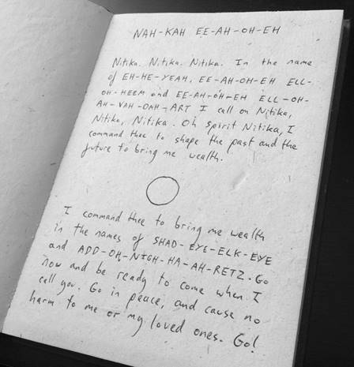

In the following empowering ritual, you will use the name Nitika. There are two main ways to pronounce this, so use the one that feels easiest to you.
One way is to say KNEE-TEA-CAR, where you are literally using the English words knee, tea, and car.
A second pronunciation is KNEE-TEA-CAH. Again, you use knee and tea. CAH sounds like calm without the lm. (You can think of CAH as a sound that rhymes with ma or pa. So CAH is just like ma but with a c instead of an m.)
For the rest of this book, I will use KNEE-TEA-CAH, but you can substitute it with the other pronunciation if you prefer. It will work.
You should also learn to vibrate the name, which is just a fancy occult term for letting the word really rumble out of you. When you speak, let the name come up from your belly, through the back of your throat. Make it feel as though you are giving birth to the word as you speak, rather than just whispering it.
If this sounds puzzling, imagine how an actor would say a magickal name in a horror movie – they would let it rumble from deep within, almost gurgling through their throat in a deep roar. Weirdly enough, Hollywood has it right, and it helps to be this dramatic.
Whatever type of voice you have, try to let the name of Nitika rumble through your throat. By vibrating the name in this way, it has much more power. The same is true of all magickal Words of Power used in this book. The rest of the ritual can be spoken normally, but all the words in capitals should be vibrated as above.
If you need to work in private, you can whisper the words, or even say them in your head, but if you do, you must imagine them rumbling out of you loudly, to the very ends of the universe.
When you feel ready, find a time to be alone and calm your thoughts. Have a pen ready.
Do not think about your needs or money. Instead, spend some time thinking about something that you enjoy or like. Just ponder that for a while, breathing easily. Then, without giving much thought to what you’re doing, perform the following steps.
1. Open your Cashbook and vibrate the words: NAH-KAH EE-AH-OH-EH.
2. Close the Cashbook and stare at the center of the sigil on its front cover. Do not stare hard, but let your gaze move over the sigil and consider that this is a key that unlocks access to the spirit Nitika.
3. Still looking at the sigil, vibrate the name Nitika (KNEE-TEA-CAH) eleven times. Count on your fingers if you have to. Make sure that minimal effort goes into counting, and most of your effort goes into feeling the name in your throat and drinking in the sigil with your eyes. Know that you are actually calling to Nitika and that Nitika will now be aware of you.
4. Open the book. Just below the words NAH-KAH EE-AH-OH-EH, write the following words:
‘Nitika. Nitika. Nitika. In the name of EH-HE-YEAH, EE-AH-OH-EH ELL-OH-HEEM, and EE-AH-OH-EH ELL-OH-AH-VAH-DAH-ART I call on Nitika, Nitika, Nitika. Oh Spirit Nitika, I command thee to shape the past and the future to bring me wealth.’
[Here leave a space and draw a small circle, about the size of an average coin]
Now write:
‘I command thee to bring me wealth in the names of SHAD-EYE-ELK-EYE and ADD-OH-NIGH-HA-AH-RETZ. Go now, and be ready to come when I call you. Go in peace, and cause no harm to me or my loved ones. Go!’
You do not need to say these words out loud yet.
The words you have written might look something like this:

5. When you’ve finished writing, close the book and turn it face down, so that you can see the orange side and the symbol that resides there. Leave the book for a few minutes, and then put it away for at least an hour. Just put it out of sight and get on with your day.
Your Magickal Cashbook is now ready to attract money. When you actually use the Cashbook, you will need to read the Words of Power out loud. These are traditional Hebrew words, rendered in a form that is easy for English speakers to work with. The Words of Power used in the ritual are all Divine names. The words are:
Ehyeh
Iao-eh Elohim
Iao-eh Eloah Va-Daath
Shaddai El Chai
Adonai ha-Aretz
These words have been used in magick for many centuries. They are an encoding of divine authority. Although they may look difficult to say at first, they are quite easy to pronounce. The pronunciation of these words, as shown in the ritual is:
EH-HE-YEAH
EE-AH-OH-EH ELL-OH-HEEM
EE-AH-OH-EH ELL-OH-AH-VAH-DAH-ART
SHAD-EYE-ELK-EYE
ADD-OH-NIGH-HA-AH-RETZ
The pronunciation is simple, but in case you need more guidance, this is a detailed look at each word of power.
EH-HE-YEAH
EH is the same as yeah without the y.
HE is the word he.
YEAH is just like the word yeah.
EE-AH-OH-EH ELL-OH-HEEM
EE sounds like me without the m.
AH is the word ah.
OH is the word oh.
EH sounds like yeah without the y.
ELL is the same as bell without a b.
OH is the word oh.
HEEM is the same as deem, but with h instead of d.
EE-AH-OH-EH ELL-OH-AH-VAH-DAH-ART
EE sounds like me without the m.
AH is the word ah.
OH is the word oh.
EH sounds like yeah without the y.
ELL is the same as bell without a b.
OH is the word oh.
AH is the word ah.
VAH is like ah with v at the front.
DAH is like dark without the k.
ART is the word art.
SHAD-EYE-ELK-EYE
SHAD is like bad but with sh instead of b.
EYE is like eye.
ELK is like elk.
EYE is like eye.
ADD-OH-NIGH-HA-AH-RETZ
ADD is the word add.
OH is the word oh.
NIGH is the same night without the t.
HA is the same as the word harp without rp.
AH is the word ah.
RETZ is like rats but with an e instead of an a.
With these words learned, you are ready to go.